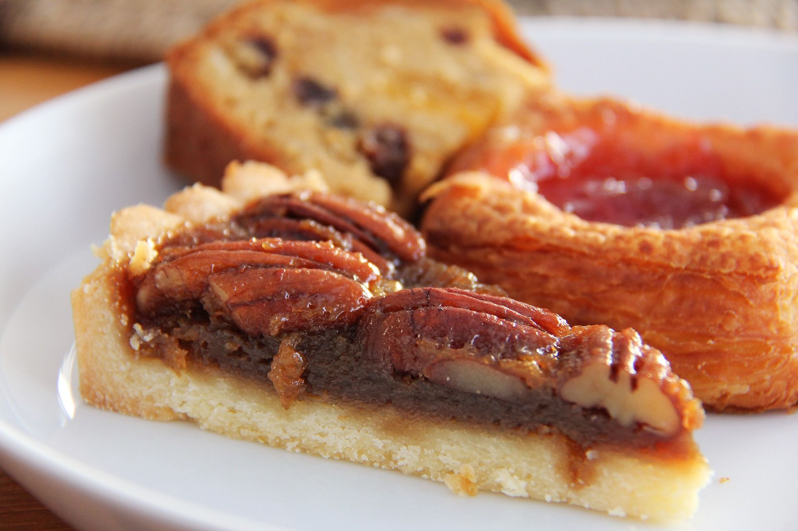
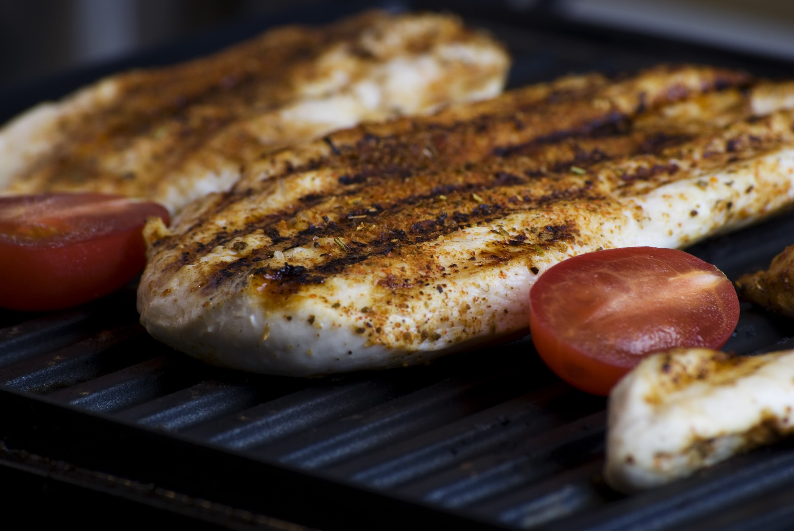
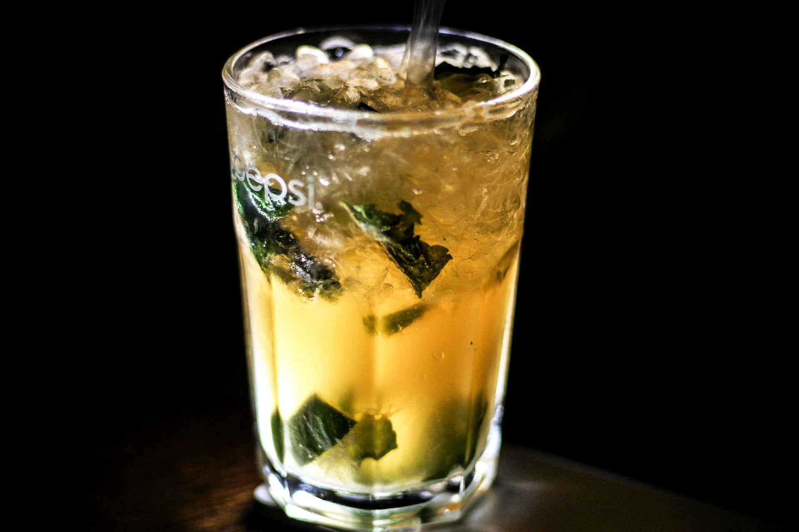
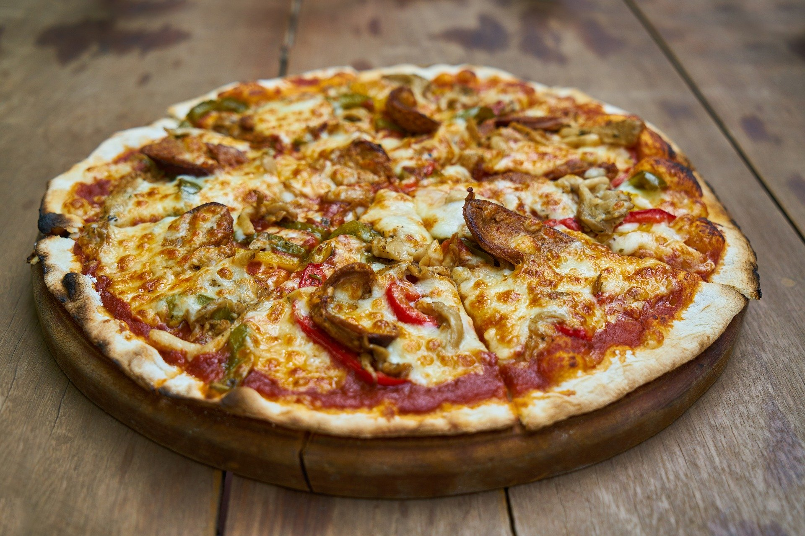
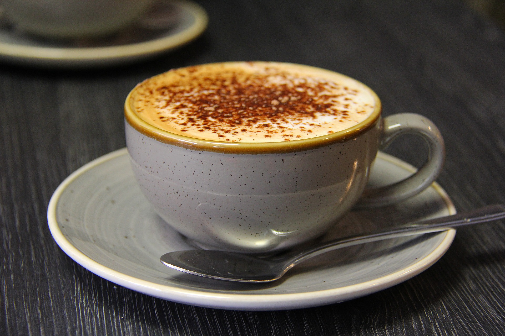
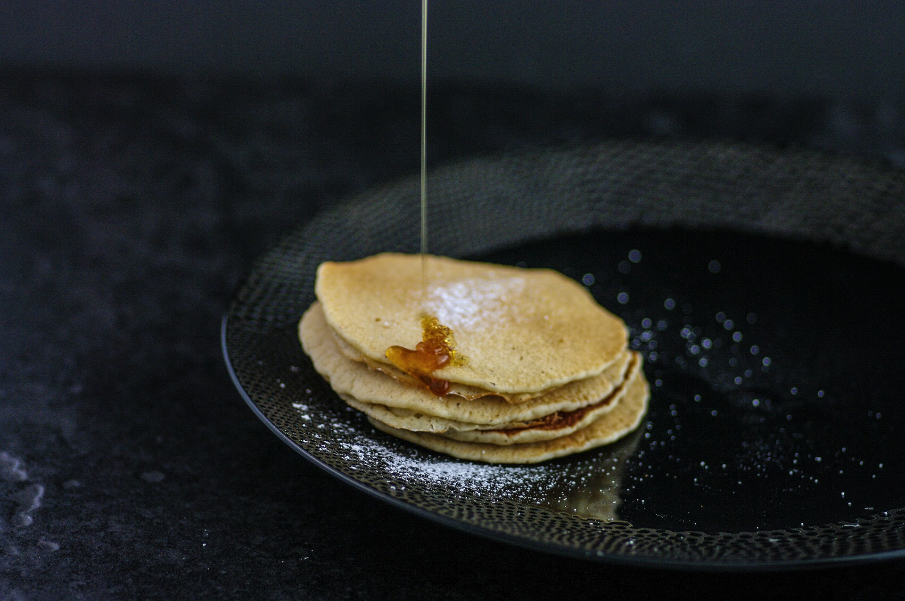

Vermont Maple Pecan Pie
Ingredients:
- 3/4 cup packed brown sugar
- 4 large eggs, room temperature
- 6 T melted unsalted butter
- 2/3 cup 100% pure maple syrup
- 1 T dark rum
- 1 tsp vanilla
- 1 tsp lemon juice
- Pinch of salt
- 1 cup shelled, raw pecan halves
- 1 – 9″ partially pre-baked pie crust
Preheat oven to 425° F. Beat one egg with 1 T water in small bowl; set aside. Combine brown sugar and 3 eggs in mixing bowl and mix well. Add syrup, rum, vanilla, lemon juice, salt and butter. Pour filling in crust and arrange pecans on top. Using a pastry brush, brush egg wash on crust. Bake for 20-30 minutes or until knife comes out clean. Let stand for five minutes before serving.
Grilled Chicken Breast with Sweet and Spicy Maple Glaze
Ingredients:
- 4 boneless skinless chicken breasts
- 4 T 100% pure maple syrup
- 1 T + 1 tsp chili pepper oil
- 1 T + 1 tsp tamari
- 2 tsp apple cider vinegar
- Optional: 1/2 cup tightly packed fresh cilantro leaves, coarsely chopped
Put all the ingredients in a large bowl and mix together. Taste and adjust the season- ings, if desired. Marinate chicken breasts for 20 minutes in the refrigerator. Grill them over a medium-hot fire until they are golden brown outside and opaque throughout.
Maple Mojito
Ingredients:
- 1/2 cup water
- 1/2 cup 100% pure maple sugar
- 1 cup packed mint leaves plus 1 mint sprig
- 1 tablespoon fresh lime juice
- Ice
- 1/4 cup plus 1 tablespoon light rum
- 2 tablespoons chilled club soda
In a small saucepan, combine the water and sugar and stir over moderate heat just until the sugar is dissolved. Reserve 15 of the mint leaves. Add the remaining mint leaves to the syrup and let steep until cool, then strain and refrigerate for up to 1 week. In a cocktail shaker, muddle the 15 reserved mint leaves with the lime juice and 1 tablespoon of the mint syrup. Add ice and the rum and shake well. Fill a highball glass with ice. Pour the drink into the glass. Garnish the drink with the mint sprig.
Maple Barbecue Chicken and Pineapple Pizza
Ingredients:
- 1/2 cup barbecue sauce
- 6 Tbsp maple syrup, divided
- 1 store bought pizza crust
- 1 cup shredded Gouda cheese
- 1 cup shredded cooked chicken
- 1/2 cup pineapple chunks, cut in ½-inch pieces (from an 8 ounce can)
- 1/4 cup thinly sliced red onion
- 1 jalapeno, sliced
Preheat oven to 425F. Combine barbecue sauce and 4 Tbsp maple syrup and spread over pizza crust. Top with shredded cheese, chicken, pineapple, red onion and jalapeno. Bake 10-15 minutes or until cheese is melted and pizza is hot. Drizzle with remaining 2 Tbsp maple syrup.
Vegan Maple Pecan Latte
Ingredients:
- 1 double shot (60 ml) of espresso
- 240 ml unsweetened soy or almond milk
- .6 ml pure pecan extract
- 10ml pure maple syrup
- Toppings:
- 2.5 ml pure maple syrup
- .6 ml vanilla extract
- 1/2 pecan, very finely chopped
Heat the soy or almond milk in a small pot until it’s very hot but not boiling. Mix in the 2 tsp maple syrup and 1/8 tsp pecan extract using a whisk. Add foam using a milk frother or from whisking milk in a pot until frothed. Pour the espresso into a cup and add the milk. Top with the foam. Mix the 1/2 tsp maple syrup with the vanilla extract (optional) and drizzle on top, add the chopped pecan last and enjoy!
Maple Pancakes
Ingredients:
- 1 cup all-purpose flour
- 1 and 1/2 teaspoon baking powder
- 1/2 teaspoon salt
- 1 large egg
- 1 cup milk
- 2 Tablespoons vegetable oil
- 1 and 1/2 Tablespoon maple syrup
In a large bowl, mix together the flour, baking powder and salt. In a separate medium bowl, beat the egg with the milk. Stir in the oil and maple syrup. Add the wet ingredients to the dry ingredients and stir until just combined. On a lightly-greased, pre-heated griddle (about 375 degrees), dollop the batter in 1/4 cup amounts per pancake. Cook until bubbles appear on the top and the edges appear dry (about 2 or 3 minutes). Turn and cook other sides to golden brown (about 2 more minutes).
